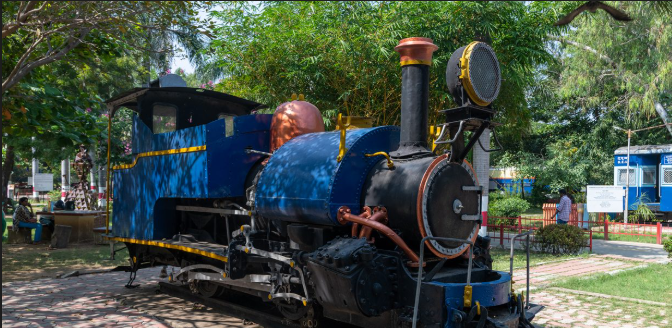

Chennai Rail Museum

The 6.5-acre (2.6 ha) museum has two galleries, a number of 19th-century outdoor heritage exhibits, a toy train that takes visitors around the perimeter, and a playground. Its collection includes indoor and outdoor exhibits. The indoor galleries contain photographs detailing the early years of the ICF and Indian Railways. The museum also houses working scale models of trains, and rare colonial-period artifacts. This will be the location of new exhibits for the museum's second decade
The museum's outdoor exhibits include 41 train models. An 1895 model of a Fowler steam ploughing engine (manufactured by John Fowler) and 1860s double-deck coaches are on display. Models include Coach of Inspection car RA 30 (manufactured by Metropolitan Carriage and Finance), Crane Hercules (used for emergency relief) and luxury coaches